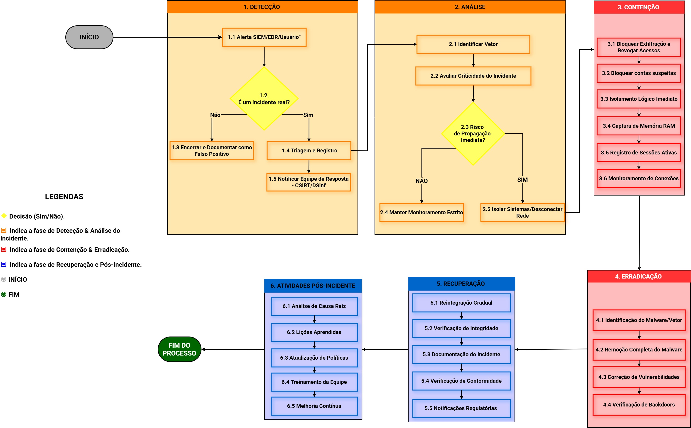
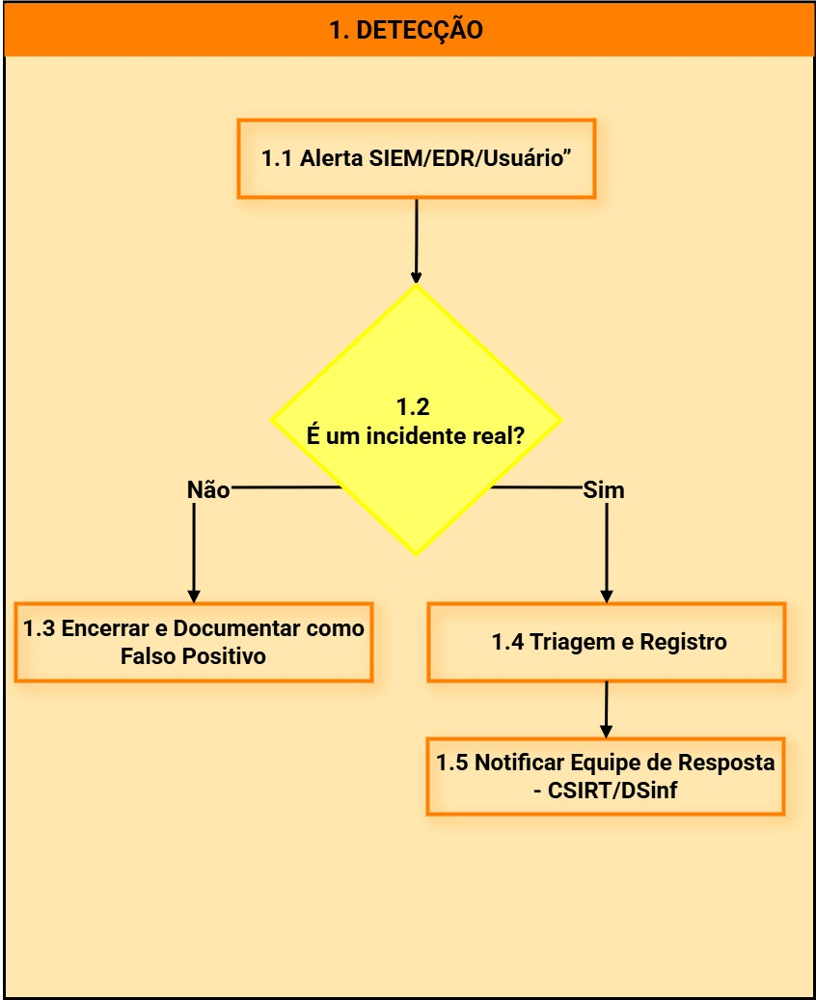
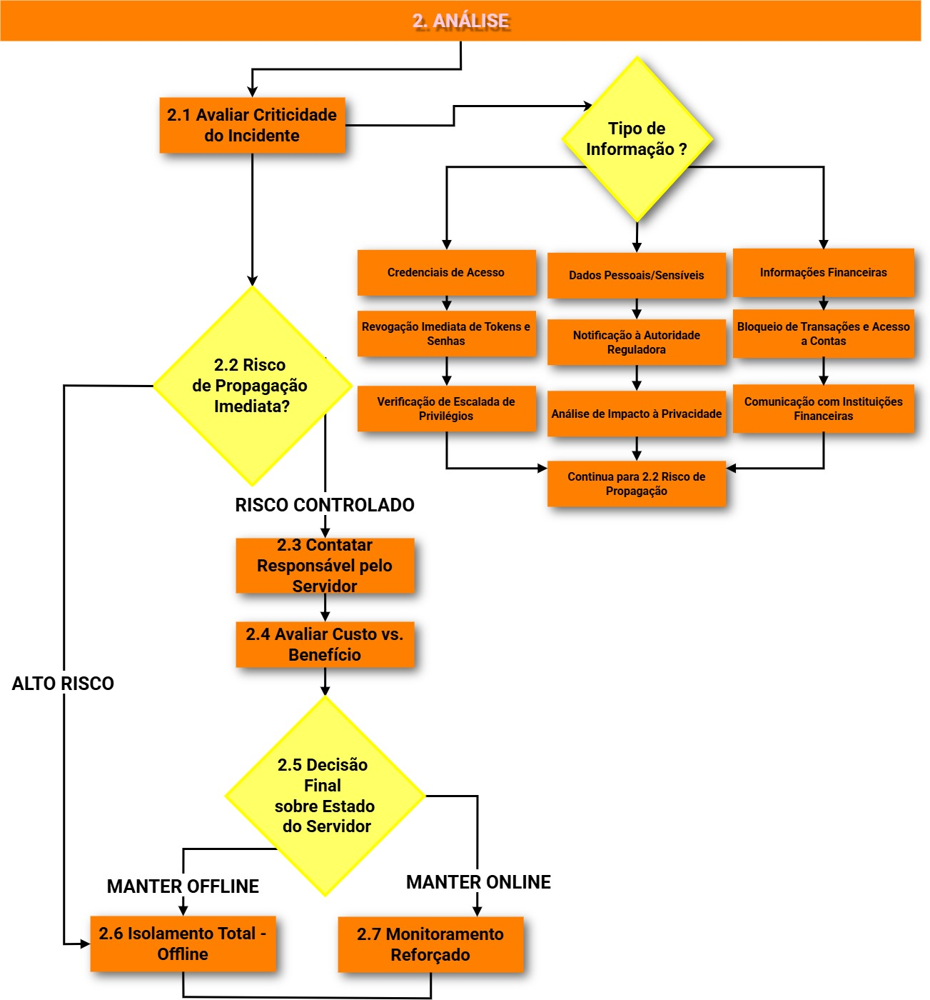
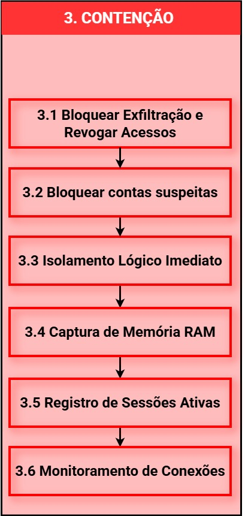
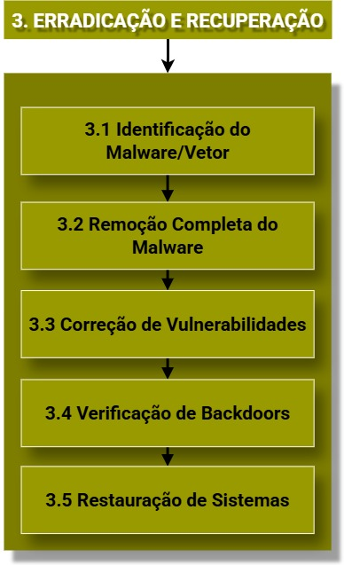
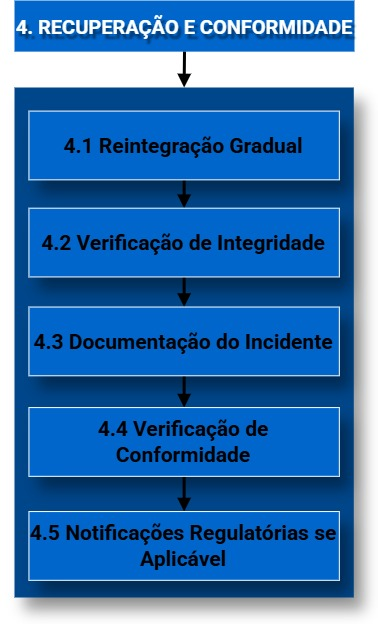

FLUXOGRAMA GERAL

Selecione uma das fases abaixo na barra de navegação para ver as instruções detalhadas.
DETECÇÃO

Ferramentas de Detecção
SIEM (Splunk/QRadar)
DLP (Symantec/Forcepoint)
IDS/IPS
UEBA (Análise de Comportamento)
ANÁLISE

Ferramentas de Análise
Wireshark (PCAP)
Forensics Tools (FTK/EnCase)
Log Aggregators
CONTENÇÃO

Ferramentas de Contenção
EDR (CrowdStrike/SentinelOne)
Azure AD / Okta (Revogar Sessions)
Cisco Umbrella / Proxy
ERRADICAÇÃO

Ferramentas de Erradicação
Antivírus/Next-Gen AV
Vulnerability Scanners (Nessus)
Configuration Management
RECUPERAÇÃO

Ferramentas de Recuperação
Veeam/Backup Systems
Change Management (ITIL)
Monitoring (Zabbix/Prometheus)